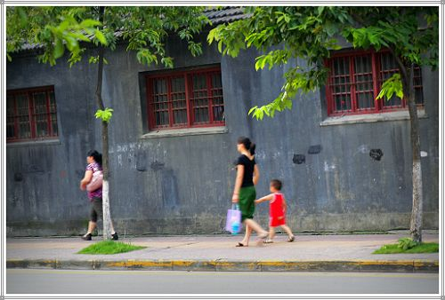

是．否 @ Jul 02, 2009
拍摄于7月1日

一直以为自己对人生是有想法的人，挫折愈多想法愈多。晚上和朋友吃饭，席间听他讲职场总结及事业发展，果真人在34岁和24岁想法会不同？24岁他是一个销售，34岁发展自己的公司。
当拥有安全且稳定有序的生活，我尽然沉浸在琐碎的每一天中自得其乐好长时间。这样过下去是不是会跌入庸俗生活的深渊，庸庸碌碌一辈子？此时，我怀疑是否对自己判断的失误，真不知道我是有想法还是没想法的人？不可否认，想法多的人更痛苦，不是吗？现在的生活则让我感受到更多的快乐，感慨也渐渐少了。换作以前，我会内疚会指责会审视自己，自己对自己说：“你怎么可以这样思想苍白平庸，你怎么可以这样肤浅地生活，你怎么可以没有想法？！你得想点儿什么或做点儿深刻的事情......”
深刻？带着气质和境界？所以我常常不自觉受到貌似深刻的人或事的吸引和影响，纠结在深刻中一探究竟。这是24岁到32岁之间的想法，这期间我总想与众不同，自命清高，对许多事情概念化，挣扎了那么多年。32岁之后仿佛一夜之间就变化了，是不挣扎在先？还是状态变化在先？那些所谓深刻的人和事变得不重要，甚至会刻意远离“深刻”，减少痛苦和纠结。那么，是否拥有有价值的人脉关系，是否拥有事业或可望得见的职业前景，是否与深刻的人做伴，体味深刻的思想和心理等等等等，这些都变得不再重要。现在，最重要的是健康和快乐。
也许，女人和男人真的差别很大？
我也知道，安逸是有风险的。
5 Responses to “是．否”
2009-07-02
你这个家伙～～～
2009-07-03
也许男人成功的压力更大吧。稍成功些的女人都被形容是女强人。haha…
2009-07-03
深有感触，美女又能有所思考多么难能可贵，其实那些深刻并不重要，女人平衡最重要，已经觉得快乐就是大福了
2009-07-03
所谓幸福，就是看你怎-么-想。
2009-07-04
什么是成功?对于女人而言,快乐,健康难道不算吗?
Leave A Reply
存档只读，评论已关闭。